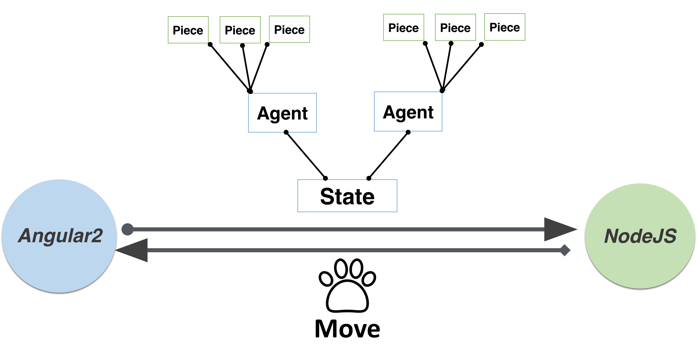

This is my Course Project for CS221 at Stanford in 2016 Autumn.
This project aims to implement an AI game engine for Chinese chess, which is a popular board game in China. A simulator with web interface and server is designed. User can play against with the computer, and can also watch different strategies playing against each other with live analysis.
Simulator
Web is used as the game interface for its flexibility and user-friendliness. Two games modes can be selected by the user:
Human Mode
andSimulation Mode
. InHuman Mode
, human player plays against the computer with selected strategy and search depth. Clicking on a piece, the legal moves for that piece are highlighted. InSimulation Mode
, two policies play against each other for multiple games by the computer, with selected policy and search depth for each team. Live winning rate for each team for all the games played so far is plotted below for comparison and analysis.


Effenciency

Analysis


Installation
# NodeJs is required as the server
# Install Dependencies
npm install
# Start the server
npm start
# Open Browser and visit http://localhost:3000/
Thanks
This project is advised by TA
Kaidi Yan
.
2016 Stanford CS221